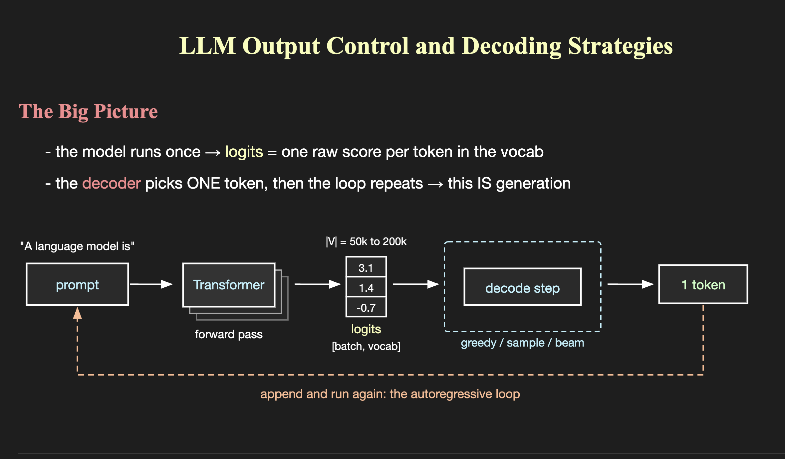

A language model runs one forward pass and produces logits — one raw score per token in the vocabulary. Everything you think of as "generation" happens after that, in the decode step.

The model emits one raw score per vocabulary token — shape [batch, vocab], with |V| typically 50k to 200k.
Greedy, sampling, or beam search all read the same logits. Swapping the strategy changes the output without touching the model.
The chosen token is appended to the prompt and the whole thing runs again. That loop is the generation.